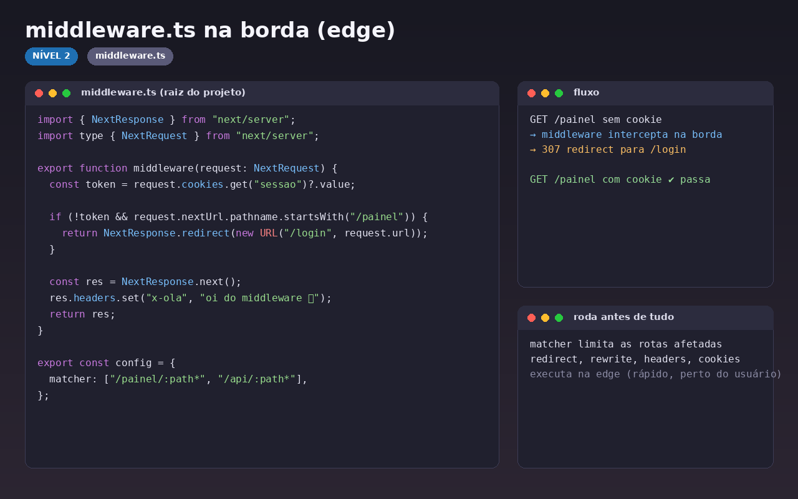

Middleware: middleware.ts
A Ana 👩💻 queria que a área /painel só abrisse para quem fez login — e queria barrar isso antes mesmo de a página carregar, rápido, na borda. A solução foi o middleware.ts na raiz do projeto: um código que roda em cada requisição que combinar com o matcher, antes de qualquer página, e pode redirecionar, reescrever, medir ou bloquear.
- Criar
middleware.tsna raiz (mesmo nível deapp/) export function middleware(request: NextRequest)- Os 4 retornos:
NextResponse.next(),redirect,rewrite, resposta direta export const config = { matcher: […] }para limitar onde roda- Ler cookies do pedido e setar headers na resposta
A ideia: o segurança na porta do evento
Um evento grande tem um segurança na porta: antes de deixar alguém entrar, ele confere o nome na lista (cookie de sessão), cola um crachá (header na resposta) e, se a pessoa não está na lista, manda para a fila do credenciamento (redirect). O middleware é esse segurança: ele roda na edge — um servidor pertinho do usuário, não no servidor principal — então a checagem é rápida e acontece antes da página ser renderizada.
O arquivo mora na raiz do projeto (ou em src/, se usar) e se chama middleware.ts. Dentro dele você exporta uma função middleware que recebe o pedido (NextRequest) e devolve uma das quatro coisas: deixar passar (NextResponse.next()), redirecionar, reescrever a URL por baixo dos panos, ou responder direto (bloquear). O config.matcher diz em quais URLs o segurança trabalha — sem ele, ele trabalharia em todas, inclusive nos arquivos estáticos, e deixaria o site lento.
Importante: o middleware não acessa o banco de dados — ele roda na edge, sem Node completo. Ele lê cookie, header, URL e decide na hora. Validação pesada de sessão fica na página/action; aqui fica só a checagem rápida do token.
Protegendo /painel com cookie de sessão
import { NextResponse } from "next/server";
import type { NextRequest } from "next/server";
export function middleware(request: NextRequest) {
// lê o cookie que a action de login gravou
const sessao = request.cookies.get("sessao")?.value;
// /painel sem sessão -> manda para o login
if (!sessao && request.nextUrl.pathname.startsWith("/painel")) {
const url = new URL("/login", request.url);
url.searchParams.set("de", request.nextUrl.pathname); // /login?de=/painel
return NextResponse.redirect(url);
}
// passou: segue o fluxo, mas cola um header na resposta
const res = NextResponse.next();
res.headers.set("x-ola-middleware", "passei por aqui 👋");
return res;
}
export const config = {
matcher: ["/painel/:path*", "/api/:path*"],
// :path* = "zero ou mais segmentos" — pega /painel e tudo abaixo
};
Os quatro jeitos de responder no middleware
// 1. deixar passar (e opcionalmente mexer em header/cookie da resposta)
const res = NextResponse.next();
res.headers.set("x-version", "2");
res.cookies.set("visto", "sim");
return res;
// 2. redirecionar (307 temporário por padrão)
return NextResponse.redirect(new URL("/login", request.url));
// 3. reescrever: a URL muda "por baixo dos panos" — o usuário não vê
// /antigo -> renderiza o conteúdo de /novo
return NextResponse.rewrite(new URL("/novo", request.url));
// 4. responder direto (bloquear): devolve JSON/HTML na hora
return NextResponse.json({ erro: "bloqueado" }, { status: 401 });
| Peça | Exemplo | Efeito |
|---|---|---|
request.cookies.get("sessao")?.value | ler cookie do pedido | checar login rápido na edge |
request.nextUrl.pathname | /painel/relatorios | caminho sem query string |
NextResponse.redirect(new URL("/login", request.url)) | 307 para /login | redireciona o navegador |
NextResponse.rewrite(new URL(…)) | reescreve a URL | renderiza outra rota sem mudar a barra de endereço |
NextResponse.next() | seguir o fluxo | permite setar headers/cookies na resposta |
matcher: ["/painel/:path*"] | config do middleware | roda só nas rotas combinadas (nunca em _next/static) |
Missão: simulando o segurança da porta: complete a função seguranca(temSessao, caminho) para devolver "redirect:/login" quando a rota começa com /painel e não há sessão, e "passou ✔" nos outros casos. Rode com os botões.
function App() {
const [temSessao, setTemSessao] = React.useState(false);
const [caminho, setCaminho] = React.useState("/painel");
const [resultado, setResultado] = React.useState("");
// 👉 como o middleware: decide na porta
function seguranca(sessao, rota) {
setResultado("");
}
return (
<div style={{ fontFamily: "sans-serif", padding: 16 }}>
<label>
<input type="checkbox" checked={temSessao}
onChange={(e) => setTemSessao(e.target.checked)} /> tem sessão (cookie)
</label>
<select value={caminho} onChange={(e) => setCaminho(e.target.value)}>
<option value="/painel">/painel</option>
<option value="/">/</option>
<option value="/sobre">/sobre</option>
</select>
<button onClick={() => seguranca(temSessao, caminho)}>passar pela porta</button>
<p>{resultado}</p>
</div>
);
}function App() {
const [temSessao, setTemSessao] = React.useState(false);
const [caminho, setCaminho] = React.useState("/painel");
const [resultado, setResultado] = React.useState("");
function seguranca(sessao, rota) {
if (!sessao && rota.startsWith("/painel")) {
setResultado("redirect: /login?de=" + rota);
} else {
setResultado("passou ✔ (NextResponse.next())");
}
}
return (
<div style={{ fontFamily: "sans-serif", padding: 16 }}>
<label>
<input type="checkbox" checked={temSessao}
onChange={(e) => setTemSessao(e.target.checked)} /> tem sessão (cookie)
</label>
<select value={caminho} onChange={(e) => setCaminho(e.target.value)}>
<option value="/painel">/painel</option>
<option value="/">/</option>
<option value="/sobre">/sobre</option>
</select>
<button onClick={() => seguranca(temSessao, caminho)}>passar pela porta</button>
<p>{resultado}</p>
</div>
);
}
/painel/:path* e /api/:path*; sem cookie de sessão, o pedido vira um redirect 307 para /login.Quando dá errado
matcher e deixar o middleware rodar em tudo — including arquivos estáticos — o que deixa o site absurdamente lento, ou pior, quebra o login num loop:⚠ Middleware is invoked on every route, isto é, em todas as rotas, inclusive _next/static/… // loop infinito comum: GET /login 307 -> /login?de=/login 307 -> /login?de=/login … (ERR_TOO_MANY_REDIRECTS)
Tradução: o middleware rodou onde não devia e o redirect criou um loop infinito de redirecionamentos. Correção: sempre exporte config.matcher e exclua o que não precisa (o padrão recomendado exclui _next/static, _next/image e favicon.ico); e no caso do login, só redirecione rotas protegidas — nunca redirecione a própria página de login.
Exercícios
1. Para o middleware rodar só em /painel e sub-rotas, o que configurar?
2. Como o middleware redireciona o navegador para outra URL?
3. Complete: dentro do middleware, como se lê o valor do cookie sessao que veio no pedido?